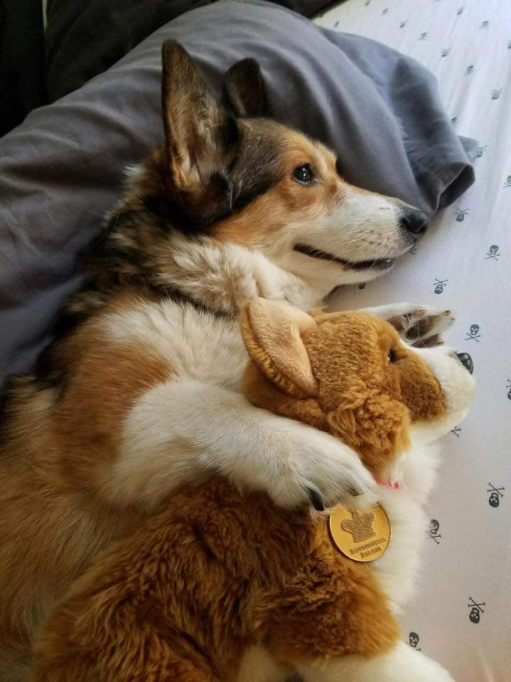
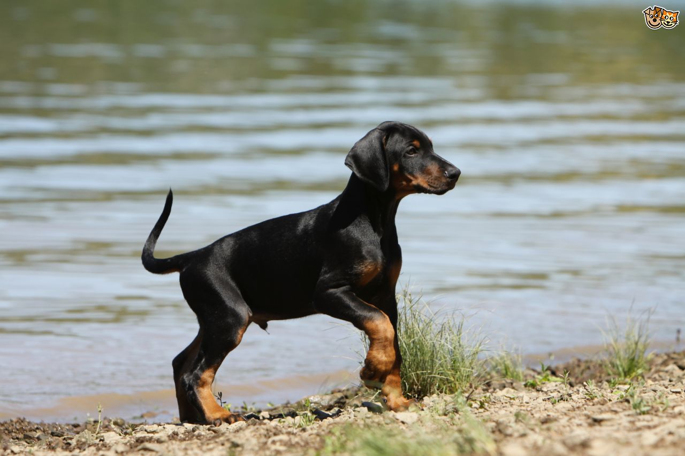

Adopt a Friend
Welcome! Your future furry friend can't wait to meet you. Browse here and email us to arrange a meeting with your new bestie :D
Chubbo

He may be a little chubby, but Chubbo loves long walks on the beach and frolicking at the dog park. A cuddly friend who will nap by your side through thick and thin. Email us to meet this Corgi / German Shepherd mix who will warm your heart.
Dobie

This puppy has just started training, and she tries to be good and sit quietly when strangers are nearby. However she is so friendly that if you make the slightest eye contact she immediately comes over to say hello. Dobie can't wait to meet you! Let us know if the feeling is mutual.
Slomo
Look at those eyes! Slomo is a globetrotter - he came all the way from Costa Rica to find a new home. A low key pet, he requires little attention and only craves a tangled nest of branches to hang from. Meet Slomo today.